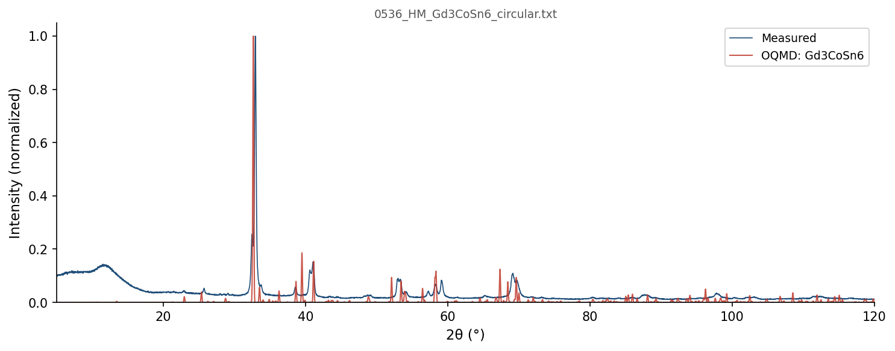

| Element | Expected (mol frac) | Measured (mol frac) | Δ (mol frac) | Δ (%) |
|---|---|---|---|---|
| Co | 0.1000 | 0.0985 | -0.0015 | -0.15% |
| Gd | 0.3000 | 0.3010 | +0.0010 | +0.10% |
| Sn | 0.6000 | 0.6005 | +0.0005 | +0.05% |
319 OQMD entries in the Co-Gd-Sn element system (23 on hull, 51 ICSD-tagged). OQMD: negative = below hull (stable). Sorted most stable first.
| Composition | Stability (meV/atom) | ΔE (meV/atom) | ICSD | Space | Entry | CIF |
|---|---|---|---|---|---|---|
Gd5Sn3 |
-73 | -758.4 | ✓ | Gd-Sn | 30420 | CIF |
Co1Sn1 |
-43 | -162.3 | ✓ | Co-Sn | 9977 | CIF |
Co1Gd3Sn6 |
-25 | -635.8 | Co-Gd-Sn | 1790943 | CIF | |
Co17Gd2 |
-21 | -100.6 | Co-Gd | 1280541 | CIF | |
Gd1Sn1 |
-21 | -805.4 | Gd-Sn | 1980585 | CIF | |
Gd1Sn2 |
-20 | -676.6 | Gd-Sn | 1795042 | CIF | |
Co1Sn4 |
-16 | -117.6 | Co-Sn | 1880385 | CIF | |
Co4Gd3Sn13 |
-15 | -406.0 | ✓ | Co-Gd-Sn | 88387 | CIF |
Gd5Sn4 |
-11 | -799.7 | ✓ | Gd-Sn | 106532 | CIF |
Co1Gd1 |
-11 | -176.7 | Co-Gd | 1365577 | CIF | |
Co2Gd1 |
-9 | -167.0 | ✓ | Co-Gd | 31242 | CIF |
Co2Gd5 |
-9 | -155.1 | Co-Gd | 1484232 | CIF | |
Gd2Sn5 |
-6 | -603.1 | Gd-Sn | 1793024 | CIF | |
Co1Gd3 |
-5 | -141.1 | ✓ | Co-Gd | 88375 | CIF |
Co4Gd1Sn6 |
-4 | -311.0 | Co-Gd-Sn | 1368900 | CIF | |
Co23Gd6 |
-3 | -133.0 | Co-Gd | 1280577 | CIF | |
Gd3Sn7 |
-2 | -627.2 | ✓ | Gd-Sn | 17337 | CIF |
Co1Sn2 |
-2 | -140.6 | Co-Sn | 1795008 | CIF | |
Co1Sn3 |
+0 | -126.7 | ✓ | Co-Sn | 21210 | CIF |
Co3Gd2 |
+0 | -171.3 | Co-Gd | 1791420 | CIF | |
Co1 |
+0 | -16.9 | ✓ | Co | 637416 | CIF |
Gd1 |
+0 | 0.0 | ✓ | Gd | 9623 | CIF |
Sn1 |
+0 | 0.0 | Sn | 1215552 | CIF | |
Gd1Sn1 |
+0 | -805.3 | Gd-Sn | 1365712 | CIF | |
Gd1Sn2 |
+0 | -676.4 | ✓ | Gd-Sn | 2023555 | CIF |
Co1Sn2 |
+0 | -140.3 | Co-Sn | 1880451 | CIF | |
Gd1 |
+1 | 0.8 | Gd | 1215418 | CIF | |
Co1Sn3 |
+1 | -126.0 | ✓ | Co-Sn | 21211 | CIF |
Gd1 |
+1 | 1.0 | Gd | 1216041 | CIF | |
Co2Gd1 |
+1 | -165.7 | Co-Gd | 1591056 | CIF | |
Gd1 |
+1 | 1.5 | ✓ | Gd | 9312 | CIF |
Co1Sn4 |
+2 | -115.3 | Co-Sn | 1880418 | CIF | |
Co1Sn2 |
+2 | -138.1 | Co-Sn | 1376796 | CIF | |
Co1Sn2 |
+2 | -138.1 | Co-Sn | 1880431 | CIF | |
Co1Sn2 |
+3 | -137.5 | Co-Sn | 1880575 | CIF | |
Gd11Sn10 |
+3 | -799.7 | ✓ | Gd-Sn | 2052546 | CIF |
Sn1 |
+3 | 3.4 | ✓ | Sn | 676081 | CIF |
Co1Gd1 |
+6 | -170.3 | Co-Gd | 1435444 | CIF | |
Gd4Sn3 |
+7 | -782.9 | Gd-Sn | 1479295 | CIF | |
Gd1Sn3 |
+8 | -519.2 | Gd-Sn | 1977807 | CIF | |
Gd1Sn3 |
+9 | -519.0 | Gd-Sn | 348484 | CIF | |
Gd1Sn3 |
+9 | -518.9 | ✓ | Gd-Sn | 30421 | CIF |
Gd1Sn2 |
+10 | -666.6 | Gd-Sn | 1795029 | CIF | |
Co1Gd1 |
+10 | -166.3 | Co-Gd | 1435446 | CIF | |
Gd2Sn5 |
+11 | -591.8 | Gd-Sn | 1484181 | CIF | |
Gd1 |
+11 | 11.3 | ✓ | Gd | 3925 | CIF |
Gd1 |
+12 | 11.5 | Gd | 1215685 | CIF | |
Gd1 |
+12 | 11.6 | Gd | 1214527 | CIF | |
Gd1 |
+12 | 12.2 | Gd | 1215774 | CIF | |
Co2Gd6Sn1 |
+13 | -323.1 | Co-Gd-Sn | 1793236 | CIF | |
Gd1 |
+13 | 13.0 | Gd | 1215863 | CIF | |
Co1Sn2 |
+13 | -127.6 | ✓ | Co-Sn | 18809 | CIF |
Co1Gd2Sn6 |
+13 | -500.0 | Co-Gd-Sn | 1907610 | CIF | |
Co12Gd1 |
+14 | -64.5 | Co-Gd | 1797301 | CIF | |
Gd3Sn4 |
+14 | -736.1 | Gd-Sn | 1484239 | CIF | |
Co5Gd1 |
+14 | -106.0 | Co-Gd | 1471997 | CIF | |
Co5Gd1 |
+14 | -105.8 | Co-Gd | 1435656 | CIF | |
Co5Sn7 |
+16 | -135.9 | Co-Sn | 1796231 | CIF | |
Co2Gd1 |
+16 | -151.1 | Co-Gd | 1800978 | CIF | |
Gd1 |
+17 | 16.7 | ✓ | Gd | 117572 | CIF |
Gd1 |
+17 | 16.8 | Gd | 1215328 | CIF | |
Co1 |
+17 | 0.0 | ✓ | Co | 594128 | CIF |
Gd1 |
+17 | 17.1 | ✓ | Gd | 8139 | CIF |
Gd1 |
+17 | 17.1 | ✓ | Gd | 51887 | CIF |
Gd1 |
+17 | 17.2 | ✓ | Gd | 88553 | CIF |
Gd1 |
+18 | 18.2 | Gd | 1215239 | CIF | |
Co2Gd2Sn1 |
+19 | -438.5 | Co-Gd-Sn | 1370510 | CIF | |
Gd1 |
+19 | 18.8 | Gd | 1214616 | CIF | |
Co1 |
+19 | 2.2 | ✓ | Co | 2030128 | CIF |
Co5Gd6 |
+21 | -151.1 | ✓ | Co-Gd | 18582 | CIF |
Co3Sn7 |
+24 | -111.1 | Co-Sn | 1798529 | CIF | |
Co8Gd3Sn4 |
+24 | -340.5 | ✓ | Co-Gd-Sn | 647465 | CIF |
Co124Sn1 |
+25 | 5.5 | Co-Sn | 2070155 | CIF | |
Co1 |
+26 | 9.5 | ✓ | Co | 592630 | CIF |
Co1Gd3 |
+27 | -114.5 | Co-Gd | 1376978 | CIF | |
Co7Gd2 |
+32 | -104.8 | ✓ | Co-Gd | 29301 | CIF |
Co2Gd2Sn1 |
+34 | -423.5 | Co-Gd-Sn | 1276629 | CIF | |
Co2Gd3Sn7 |
+34 | -523.3 | Co-Gd-Sn | 1793754 | CIF | |
Co1Gd1Sn1 |
+34 | -508.2 | Co-Gd-Sn | 1445436 | CIF | |
Co1 |
+39 | 22.3 | Co | 1485028 | CIF | |
Gd5Sn3 |
+41 | -717.6 | Gd-Sn | 1796167 | CIF | |
Co3Sn4 |
+41 | -111.7 | Co-Sn | 1791991 | CIF | |
Sn1 |
+42 | 42.4 | Sn | 1215641 | CIF | |
Co1Sn1 |
+43 | -119.2 | Co-Sn | 1793595 | CIF | |
Sn1 |
+44 | 43.9 | ✓ | Sn | 685019 | CIF |
Sn1 |
+44 | 44.0 | ✓ | Sn | 687653 | CIF |
Gd1Sn3 |
+44 | -483.3 | Gd-Sn | 323998 | CIF | |
Co1 |
+48 | 31.0 | Co | 1214873 | CIF | |
Gd1Sn3 |
+49 | -478.9 | Gd-Sn | 300044 | CIF | |
Co3Gd1 |
+52 | -93.1 | ✓ | Co-Gd | 29303 | CIF |
Gd3Sn1 |
+52 | -453.7 | Gd-Sn | 345614 | CIF | |
Gd3Sn5 |
+54 | -654.4 | Gd-Sn | 1799737 | CIF | |
Sn1 |
+58 | 58.4 | Sn | 1215284 | CIF | |
Co1Gd1Sn2 |
+60 | -472.2 | Co-Gd-Sn | 1790046 | CIF | |
Co1 |
+61 | 44.1 | ✓ | Co | 592136 | CIF |
Co3Gd5 |
+62 | -101.9 | Co-Gd | 1799834 | CIF | |
Sn1 |
+63 | 63.4 | Sn | 1215373 | CIF | |
Co1Gd1Sn2 |
+65 | -467.5 | ✓ | Co-Gd-Sn | 22914 | CIF |
Sn1 |
+65 | 65.4 | Sn | 1214572 | CIF | |
Sn1 |
+66 | 65.9 | Sn | 1215730 | CIF | |
Co1 |
+66 | 49.3 | Co | 1577561 | CIF | |
Sn1 |
+66 | 66.2 | Sn | 1214661 | CIF | |
Sn1 |
+67 | 67.3 | ✓ | Sn | 690473 | CIF |
Sn1 |
+69 | 69.1 | Sn | 1215463 | CIF | |
Co1Sn4 |
+70 | -48.1 | Co-Sn | 1339202 | CIF | |
Co3Sn2 |
+70 | -63.7 | Co-Sn | 1797416 | CIF | |
Co3Sn2 |
+70 | -63.6 | ✓ | Co-Sn | 2026307 | CIF |
Sn1 |
+70 | 69.8 | Sn | 1216089 | CIF | |
Gd1Sn3 |
+72 | -455.3 | ✓ | Gd-Sn | 17338 | CIF |
Sn1 |
+72 | 72.5 | Sn | 1472930 | CIF | |
Sn1 |
+73 | 72.8 | ✓ | Sn | 92397 | CIF |
Co7Gd2 |
+73 | -64.3 | ✓ | Co-Gd | 17109 | CIF |
Gd1Sn3 |
+73 | -454.4 | ✓ | Gd-Sn | 89770 | CIF |
Sn1 |
+74 | 74.2 | Sn | 1215908 | CIF | |
Co1 |
+76 | 58.7 | Co | 1489243 | CIF | |
Sn1 |
+76 | 75.7 | Sn | 1215819 | CIF | |
Sn1 |
+76 | 76.1 | Sn | 1215195 | CIF | |
Co2Gd3 |
+77 | -89.3 | Co-Gd | 426514 | CIF | |
Co1Sn6 |
+78 | -5.7 | Co-Sn | 1340585 | CIF | |
Sn1 |
+79 | 79.0 | Sn | 1521910 | CIF | |
Sn1 |
+79 | 79.0 | Sn | 1521913 | CIF | |
Co3Sn2 |
+79 | -53.8 | Co-Sn | 1793829 | CIF | |
Gd2Sn1 |
+80 | -594.5 | Gd-Sn | 1787241 | CIF | |
Sn1 |
+82 | 82.2 | Sn | 1215106 | CIF | |
Co15Sn1 |
+82 | 47.2 | Co-Sn | 2061977 | CIF | |
Gd3Sn1 |
+83 | -423.0 | Gd-Sn | 321128 | CIF | |
Sn1 |
+83 | 82.8 | ✓ | Sn | 9297 | CIF |
Gd3Sn1 |
+83 | -422.7 | Gd-Sn | 302914 | CIF | |
Co1Gd1Sn5 |
+83 | -291.1 | Co-Gd-Sn | 1790477 | CIF | |
Co1Gd1 |
+83 | -93.3 | Co-Gd | 1219785 | CIF | |
Sn1 |
+84 | 84.2 | Sn | 1472595 | CIF | |
Co1Gd1 |
+84 | -92.3 | Co-Gd | 306957 | CIF | |
Co2Sn3 |
+85 | -64.3 | Co-Sn | 426556 | CIF | |
Sn1 |
+87 | 87.1 | Sn | 1214839 | CIF | |
Co4Gd3Sn4 |
+88 | -402.7 | Co-Gd-Sn | 1796973 | CIF | |
Co1Gd1Sn3 |
+91 | -390.4 | Co-Gd-Sn | 1913392 | CIF | |
Co1Gd1Sn1 |
+93 | -449.1 | Co-Gd-Sn | 1448457 | CIF | |
Co1Gd1Sn1 |
+94 | -449.1 | Co-Gd-Sn | 1446990 | CIF | |
Co1Gd1Sn1 |
+94 | -449.1 | Co-Gd-Sn | 1447718 | CIF | |
Co10Sn1 |
+96 | 53.1 | Co-Sn | 1893099 | CIF | |
Co1 |
+103 | 85.7 | ✓ | Co | 594127 | CIF |
Sn1 |
+103 | 102.6 | Sn | 1214928 | CIF | |
Co1 |
+103 | 85.9 | Co | 1215853 | CIF | |
Co1 |
+103 | 86.5 | Co | 1280314 | CIF | |
Co1 |
+104 | 86.7 | ✓ | Co | 2031488 | CIF |
Co15Sn1 |
+106 | 70.9 | Co-Sn | 2062003 | CIF | |
Co15Sn1 |
+108 | 73.2 | Co-Sn | 2061951 | CIF | |
Co3Gd1 |
+110 | -34.6 | Co-Gd | 1788168 | CIF | |
Co1 |
+111 | 94.0 | Co | 1790951 | CIF | |
Co8Sn1 |
+113 | 64.2 | Co-Sn | 2069987 | CIF | |
Co1 |
+115 | 97.8 | ✓ | Co | 2030127 | CIF |
Co1 |
+115 | 98.4 | Co | 1791473 | CIF | |
Co1 |
+116 | 99.2 | Co | 1908163 | CIF | |
Sn1 |
+117 | 117.5 | ✓ | Sn | 2029517 | CIF |
Co1 |
+118 | 101.0 | Co | 1522296 | CIF | |
Sn1 |
+118 | 118.1 | Sn | 1214750 | CIF | |
Co17Sn1 |
+121 | 88.3 | Co-Sn | 2066451 | CIF | |
Sn1 |
+125 | 124.8 | Sn | 1280319 | CIF | |
Sn1 |
+125 | 124.9 | Sn | 1215017 | CIF | |
Co17Sn1 |
+127 | 93.8 | Co-Sn | 2062474 | CIF | |
Co2Sn3 |
+127 | -22.1 | Co-Sn | 1800413 | CIF | |
Co1 |
+129 | 111.8 | ✓ | Co | 631034 | CIF |
Co5Gd1 |
+133 | 12.8 | ✓ | Co-Gd | 18800 | CIF |
Co1 |
+133 | 116.4 | Co | 1477104 | CIF | |
Co15Sn1 |
+135 | 99.4 | Co-Sn | 2066541 | CIF | |
Co3Sn1 |
+139 | 49.5 | Co-Sn | 300565 | CIF | |
Co1 |
+140 | 122.8 | Co | 1972145 | CIF | |
Co9Sn1 |
+140 | 94.0 | Co-Sn | 1893002 | CIF | |
Co3Gd1Sn2 |
+142 | -218.6 | Co-Gd-Sn | 1791312 | CIF | |
Gd1 |
+146 | 146.0 | Gd | 1522004 | CIF | |
Gd1 |
+146 | 146.0 | Gd | 1522007 | CIF | |
Gd1 |
+146 | 146.1 | ✓ | Gd | 17319 | CIF |
Gd1 |
+146 | 146.1 | Gd | 1215150 | CIF | |
Co3Sn1 |
+149 | 59.5 | Co-Sn | 319159 | CIF | |
Co1Gd2Sn1 |
+152 | -402.2 | Co-Gd-Sn | 1560431 | CIF | |
Co7Sn1 |
+152 | 99.0 | Co-Sn | 2069909 | CIF | |
Co3Sn1 |
+157 | 67.2 | Co-Sn | 311107 | CIF | |
Co2Gd1Sn1 |
+159 | -252.4 | Co-Gd-Sn | 413754 | CIF | |
Co15Sn1 |
+169 | 134.1 | Co-Sn | 2061964 | CIF | |
Co9Sn1 |
+172 | 125.9 | Co-Sn | 1972623 | CIF | |
Co3Sn1 |
+175 | 85.0 | Co-Sn | 343645 | CIF | |
Co1Gd1Sn1 |
+177 | -365.8 | Co-Gd-Sn | 861187 | CIF | |
Gd1 |
+178 | 177.8 | Gd | 1214883 | CIF | |
Co1Gd1Sn1 |
+179 | -363.5 | Co-Gd-Sn | 1446215 | CIF | |
Co17Gd2 |
+180 | 78.9 | ✓ | Co-Gd | 663312 | CIF |
Co2Sn1 |
+180 | 66.6 | Co-Sn | 1343885 | CIF | |
Gd1Sn1 |
+181 | -624.7 | Gd-Sn | 1782648 | CIF | |
Co17Gd2 |
+182 | 81.4 | ✓ | Co-Gd | 29302 | CIF |
Co1Gd1 |
+183 | 5.9 | Co-Gd | 338499 | CIF | |
Co1 |
+184 | 167.3 | Co | 2069777 | CIF | |
Co1 |
+187 | 170.2 | Co | 1485781 | CIF | |
Co1Sn3 |
+188 | 60.8 | Co-Sn | 1795949 | CIF | |
Gd1 |
+191 | 190.8 | Gd | 1214705 | CIF | |
Gd1 |
+191 | 191.1 | Gd | 1215061 | CIF | |
Co1 |
+192 | 175.1 | Co | 2066502 | CIF | |
Co1 |
+193 | 175.8 | Co | 2069795 | CIF | |
Co1 |
+193 | 175.8 | Co | 2069798 | CIF | |
Co1 |
+193 | 175.8 | Co | 2069801 | CIF | |
Co1 |
+193 | 175.8 | Co | 2069804 | CIF | |
Co1 |
+193 | 175.8 | Co | 2069819 | CIF | |
Co1 |
+193 | 175.8 | Co | 2069822 | CIF | |
Co1 |
+193 | 175.8 | Co | 2069792 | CIF | |
Co1 |
+193 | 175.8 | Co | 2069810 | CIF | |
Co1 |
+193 | 175.8 | Co | 2069816 | CIF | |
Co1 |
+193 | 175.8 | Co | 2069825 | CIF | |
Co1 |
+193 | 175.8 | Co | 2069813 | CIF | |
Co1 |
+193 | 175.8 | Co | 2069789 | CIF | |
Co1 |
+193 | 175.8 | Co | 2069807 | CIF | |
Co1 |
+194 | 176.7 | Co | 1972143 | CIF | |
Gd1Sn1 |
+194 | -611.0 | Gd-Sn | 307147 | CIF | |
Gd1 |
+197 | 197.1 | Gd | 1214794 | CIF | |
Co1 |
+199 | 182.6 | Co | 1487127 | CIF | |
Co1 |
+201 | 184.6 | Co | 2069765 | CIF | |
Co1 |
+202 | 185.3 | Co | 2069759 | CIF | |
Co1 |
+206 | 189.4 | Co | 2069783 | CIF | |
Co1 |
+206 | 189.4 | Co | 2069750 | CIF | |
Co1 |
+206 | 189.4 | Co | 2069786 | CIF | |
Co1 |
+206 | 189.4 | Co | 2069771 | CIF | |
Co1 |
+206 | 189.4 | Co | 2069753 | CIF | |
Co1 |
+206 | 189.4 | Co | 2069780 | CIF | |
Co1 |
+206 | 189.4 | Co | 2069762 | CIF | |
Co1 |
+206 | 189.4 | Co | 2069774 | CIF | |
Co1 |
+206 | 189.4 | Co | 2069756 | CIF | |
Co1 |
+207 | 189.7 | Co | 2066493 | CIF | |
Co1 |
+208 | 191.2 | Co | 2069717 | CIF | |
Co1 |
+209 | 191.7 | Co | 2069732 | CIF | |
Co1 |
+212 | 195.2 | Co | 1214517 | CIF | |
Co1 |
+212 | 195.3 | Co | 1215675 | CIF | |
Co1 |
+216 | 199.4 | Co | 2069711 | CIF | |
Co1 |
+217 | 200.4 | Co | 1485147 | CIF | |
Co2Sn1 |
+219 | 104.9 | ✓ | Co-Sn | 29499 | CIF |
Co1 |
+220 | 202.7 | Co | 2069729 | CIF | |
Co1 |
+221 | 204.5 | Co | 1215408 | CIF | |
Co1 |
+222 | 205.3 | Co | 1216031 | CIF | |
Co1 |
+226 | 209.0 | Co | 1215318 | CIF | |
Co1Gd2Sn1 |
+229 | -324.6 | Co-Gd-Sn | 549375 | CIF | |
Co1 |
+231 | 214.4 | Co | 1215229 | CIF | |
Gd1Sn1 |
+233 | -572.7 | Gd-Sn | 338689 | CIF | |
Co1 |
+234 | 216.8 | Co | 1214606 | CIF | |
Gd1Sn1 |
+235 | -570.7 | Gd-Sn | 328231 | CIF | |
Gd1Sn1 |
+235 | -570.3 | Gd-Sn | 1106332 | CIF | |
Co1 |
+238 | 220.8 | Co | 2069747 | CIF | |
Gd3Sn1 |
+241 | -264.4 | Gd-Sn | 313456 | CIF | |
Co1Sn1 |
+254 | 91.6 | Co-Sn | 1219827 | CIF | |
Co1Sn1 |
+255 | 92.7 | Co-Sn | 337526 | CIF | |
Co7Sn1 |
+258 | 204.9 | Co-Sn | 2070181 | CIF | |
Gd1 |
+262 | 261.8 | Gd | 1214972 | CIF | |
Co1Sn1 |
+265 | 102.9 | Co-Sn | 305984 | CIF | |
Co2Sn1 |
+272 | 157.9 | Co-Sn | 1591043 | CIF | |
Gd1Sn1 |
+280 | -525.9 | Gd-Sn | 1229617 | CIF | |
Co1 |
+284 | 267.1 | Co | 2069849 | CIF | |
Co1 |
+284 | 267.1 | Co | 2069843 | CIF | |
Co1 |
+285 | 267.7 | Co | 2069861 | CIF | |
Co1 |
+285 | 267.7 | Co | 2069864 | CIF | |
Co1 |
+285 | 267.9 | Co | 2069846 | CIF | |
Co1 |
+285 | 268.1 | Co | 2069852 | CIF | |
Co1 |
+285 | 268.1 | Co | 2069831 | CIF | |
Gd1Sn3 |
+286 | -242.0 | Gd-Sn | 310586 | CIF | |
Co1 |
+286 | 268.8 | Co | 2069840 | CIF | |
Co1 |
+286 | 269.2 | Co | 2069837 | CIF | |
Co1 |
+287 | 269.8 | Co | 2069858 | CIF | |
Co1 |
+287 | 269.8 | Co | 2069828 | CIF | |
Co1 |
+299 | 282.0 | Co | 2066484 | CIF | |
Sn1 |
+299 | 299.4 | Sn | 1215997 | CIF | |
Co1Sn1 |
+301 | 138.8 | Co-Sn | 1228992 | CIF | |
Co1Gd3 |
+305 | 163.5 | Co-Gd | 323633 | CIF | |
Co3Gd1 |
+306 | 161.8 | Co-Gd | 319152 | CIF | |
Co2Sn1 |
+307 | 193.5 | Co-Sn | 1472950 | CIF | |
Co3Gd2Sn1 |
+309 | -82.3 | Co-Gd-Sn | 1530384 | CIF | |
Co1Gd1 |
+318 | 141.2 | Co-Gd | 1435447 | CIF | |
Co1Gd1 |
+319 | 142.8 | Co-Gd | 1435445 | CIF | |
Co2Sn1 |
+321 | 207.0 | Co-Sn | 1472762 | CIF | |
Co1 |
+322 | 305.1 | Co | 1972142 | CIF | |
Co3Gd1 |
+333 | 188.8 | Co-Gd | 343638 | CIF | |
Co1 |
+342 | 324.8 | Co | 1214784 | CIF | |
Co1Sn1 |
+347 | 185.1 | Co-Sn | 327068 | CIF | |
Gd1Sn2 |
+355 | -322.0 | Gd-Sn | 1592717 | CIF | |
Co1 |
+358 | 340.7 | Co | 1215051 | CIF | |
Co1 |
+365 | 348.1 | Co | 1972141 | CIF | |
Co3Gd1 |
+378 | 233.2 | Co-Gd | 302549 | CIF | |
Co1Gd1 |
+380 | 203.6 | Co-Gd | 1106142 | CIF | |
Co3Gd1 |
+385 | 240.8 | Co-Gd | 313091 | CIF | |
Co1Sn3 |
+392 | 265.7 | Co-Sn | 321649 | CIF | |
Co1Gd1 |
+401 | 224.2 | Co-Gd | 328041 | CIF | |
Co1 |
+403 | 385.8 | Co | 1214962 | CIF | |
Sn1 |
+413 | 412.6 | ✓ | Sn | 2030176 | CIF |
Co1Gd3 |
+431 | 289.6 | Co-Gd | 348119 | CIF | |
Gd1 |
+441 | 440.6 | Gd | 1215596 | CIF | |
Co1 |
+444 | 427.0 | Co | 1215140 | CIF | |
Co1Gd3 |
+454 | 312.6 | Co-Gd | 298078 | CIF | |
Co1Sn1 |
+454 | 292.0 | Co-Sn | 1105169 | CIF | |
Co1Gd1Sn2 |
+456 | -76.7 | Co-Gd-Sn | 493840 | CIF | |
Co9Sn2 |
+466 | 396.4 | Co-Sn | 1893041 | CIF | |
Co1Sn3 |
+478 | 350.9 | Co-Sn | 298084 | CIF | |
Co1Gd3 |
+487 | 346.1 | Co-Gd | 308610 | CIF | |
Co1Sn3 |
+492 | 365.3 | Co-Sn | 346135 | CIF | |
Co1Sn3 |
+507 | 380.3 | Co-Sn | 308617 | CIF | |
Co7Sn2 |
+512 | 430.4 | Co-Sn | 2069948 | CIF | |
Co1Gd1Sn1 |
+524 | -18.7 | Co-Gd-Sn | 1455042 | CIF | |
Co1Sn1 |
+546 | 384.1 | Co-Sn | 1225506 | CIF | |
Co1 |
+566 | 549.0 | Co | 1214695 | CIF | |
Co1Gd1Sn1 |
+608 | 65.1 | Co-Gd-Sn | 924940 | CIF | |
Co1Gd1Sn1 |
+629 | 86.0 | Co-Gd-Sn | 1455884 | CIF | |
Gd2Sn1 |
+653 | -20.7 | Gd-Sn | 1593687 | CIF | |
Co1 |
+697 | 680.2 | Co | 1972140 | CIF | |
Co1 |
+717 | 700.4 | Co | 1215764 | CIF | |
Co1Gd1 |
+746 | 569.3 | Co-Gd | 1225464 | CIF | |
Co1 |
+766 | 749.4 | Co | 1215586 | CIF | |
Co1Sn1 |
+838 | 675.5 | Co-Sn | 1219313 | CIF | |
Gd1 |
+844 | 843.7 | Gd | 1215952 | CIF | |
Co1Gd1Sn1 |
+992 | 449.1 | Co-Gd-Sn | 980473 | CIF | |
Gd1Sn1 |
+1022 | 216.1 | Gd-Sn | 1222646 | CIF | |
Co1Gd1 |
+1054 | 877.6 | Co-Gd | 1219271 | CIF | |
Co2Sn1 |
+1140 | 1026.5 | Co-Sn | 1232478 | CIF | |
Co1Sn2 |
+1146 | 1005.5 | Co-Sn | 1592684 | CIF | |
Co1Gd2 |
+1244 | 1083.7 | Co-Gd | 1593666 | CIF | |
Co2Gd1 |
+1554 | 1387.2 | Co-Gd | 1232436 | CIF | |
Gd1 |
+1855 | 1854.5 | Gd | 1215507 | CIF | |
Co1 |
+2256 | 2239.5 | Co | 1215942 | CIF |

19 known superconductor(s) in the Gd3CoSn6 element system. Sorted by Tc descending. ■ closest composition
| Compound | Formula | Tc (K) | Reference |
|---|---|---|---|
| Sn1 | Sn1 |
5.30 | Search |
| Sn(III) | Sn1 |
5.30 | Search |
| Sn1 | Sn1 |
5.20 | Search |
| Sn | Sn1 |
4.46 | Search |
| O1Sn1 | O1Sn1 |
3.81 | Search |
| Sn(112) | Sn1 |
3.81 | 10.1103/PhysRev.95.333 |
| Sn | Sn1 |
3.81 | 10.1103/PhysRev.86.235 |
| Sn | Sn1 |
3.77 | 10.1103/PhysRev.120.1964 |
| Sn(118) | Sn1 |
3.75 | 10.1103/PhysRev.95.333 |
| Sn | Sn1 |
3.74 | 10.1103/PhysRev.86.235 |
| Sn | Sn1 |
3.74 | 10.1103/PhysRev.86.235 |
| Sn | Sn1 |
3.73 | Search |
| Sn | Sn1 |
3.73 | 10.1103/PhysRev.112.31 |
| Sn | Sn1 |
3.73 | 10.1103/PhysRev.140.A528 |
| Sn1 | Sn1 |
3.72 | Search |
| Sn | Sn1 |
3.72 | 10.1103/PhysRev.120.1964 |
| Sn | Sn1 |
3.71 | 10.1103/PhysRev.148.353 |
| Sn(124) | Sn1 |
3.67 | 10.1103/PhysRev.95.333 |
| SnO | Sn1O1 |
1.40 | 10.1103/PhysRevLett.105.157001 |